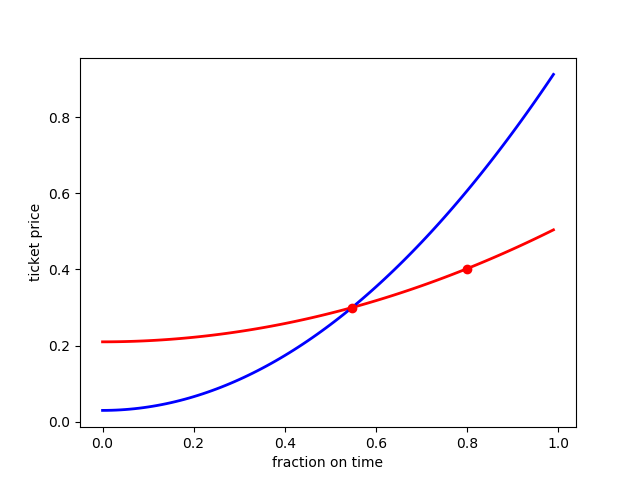
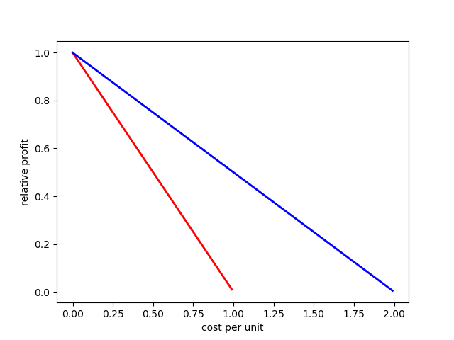

last time
- questions?
regulation
- key to understanding regulation is:
- differential impact of regulation instruments
- on different types of firms

measuring competition
- if the market is competitive, less reason to “worry” for a competition authority
- concentration measures
- price cost margins
- profit levels
- “misinterpret” a firm that becomes more efficient
Profit Elasticity

health care
- health care market is “complicated” due to combination of externalities
- and the regulation to address these externalities
- adverse selection; for basic package
- mandatory insurance
- community rating
- insurers have to accept each customer
- risk adjustment
- moral hazard; for patients
- deductible
- moral hazard; for physicians
- physicians as employees
- insurers use budgets instead of fee-for-service
- complicates risk adjustment
- quality
- hard to measure, report, contract on
- look for observable variables correlated with quality; e.g. quantity
- if we believe that patients can learn from each other, reward quality through quantity; but then: physician moral hazard
- adverse selection; for basic package
provider competition
- as patients are insured, this hardly happens on price
- if patients can learn from each other, this happens on quality
- “good quality”
- better focus on patient well-being
- easier to make appointments; combine appointments with different physicians on the same day
- quicker recovery
- “bad quality”
- easier to get treatment
- socially wasteful treatments (e.g. too expensive through upcoding)
- “good quality”
- providers only compete for patients, if they can make a profit on patients
- depends on contracts offered by insurers
insurer competition
- insurers compete on how generous their contracts are compared to their price/premium
- more generous contracts
- make it more likely that patient gets treated
- make it more profitable to attract patients through quality
- more generous contracts
- adverse selection: if risk adjustment is not perfect, insurer does not want to
be too attractive for patients with expected high costs
- disadvantage of community rating: this is hidden through services offered
- with risk rating this would be observable through prices
- patients may not understand the value of a new treatment compared to current
best alternative
- too early adoption at a high price of new treatments
value of sustainablity
- ideally, sustainability is priced in the market
- e.g. carbon tax (lack of sustainability)
- consumer preference (valuation) for sustainable production, e.g. through certification
- if so, competition will take care of it
- firms’ incentives to reduce costs will be socially valuable
- this is the regulation solution to external effects
- if it is not priced into the market:
- competition may not maximize welfare:
- coal is cheaper than solar energy and consumers prefer to pay low price
- this does not imply that lack of competition (e.g. merger or agreements between firms) will improve sustainability
tradeoffs
- suppose we can “invest” now to get more a more sustainable outcome, will this
be worth it?
- e.g. we allow a joint venture which risks helping firms to coordinate prices as well
- cost-benefit analysis
- if we know the cost of the investment, what is the benefit of sustainability?
- what is the value of a reduction in, say, global warming?
- scientific input
- this benefit cannot be “infinity”
- how do we discount the future value?
- interest rate
- weight of population then vs now
- probability problem will be solved otherwise